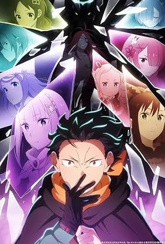
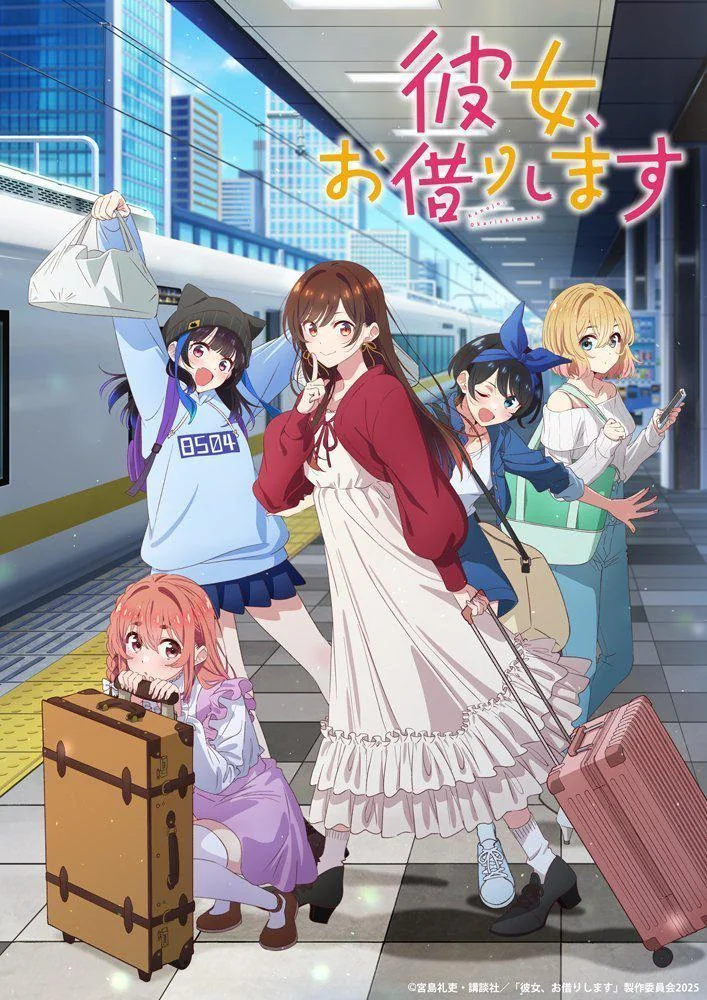
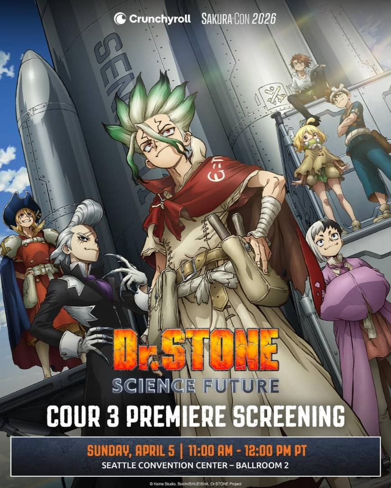

Re:Zero S4: Pleiades Arc PV Breaks Records
The first full trailer for Re:Zero Season 4 has shattered records for most-watched anime PV in 24 hours. The footage teases the grueling desert journey to the Watchtower, with fans speculating about the hidden identity of the "Shaula" character shown at the end. White Fox has promised their most ambitious work yet.

"Rent-a-Girlfriend" S5: Final Teaser?
The fifth season of "Rent-a-Girlfriend" is being marketed with the tagline "The Final Confession." While the manga continues, the anime production committee hinted that this season might reach a definitive climax for the TV series. Controversy remains high among the fanbase regarding the pacing of Kazuya's development.

Dr. Stone Science Future: Rocket Specs Detailed
In a fascinating cross-promotion, the production team behind Dr. Stone released a "Science Breakdown" of the rocket featured in the upcoming cour. Real-life aerospace engineers were interviewed to discuss the feasibility of Senku's inventions, adding a layer of educational hype to the science-fiction series.

"Haibara's New Game+" Dominates Late-Night Slot
The "regret-themed" time travel series has become a sleeper hit, consistently winning its late-night broadcast slot. Psychologists have even weighed in on the show's popularity, attributing it to the "collective nostalgia" of the adult audience. Plans for a second season are already reportedly being discussed in internal meetings.